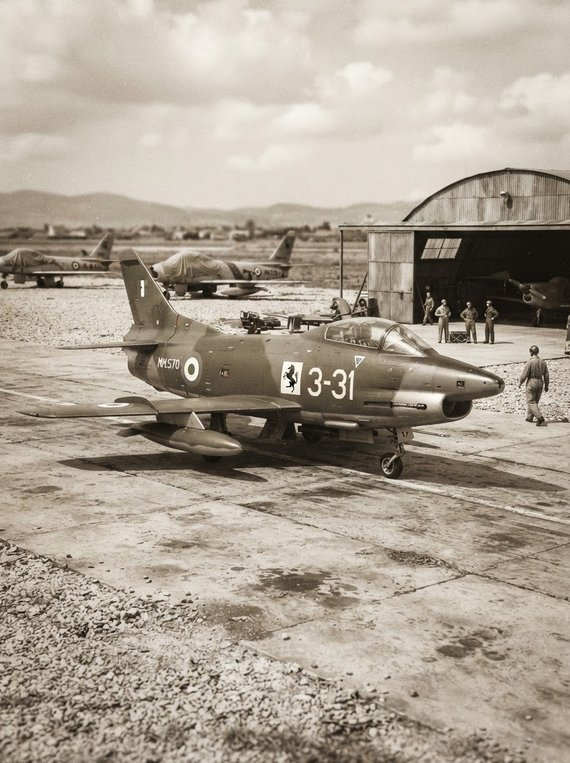
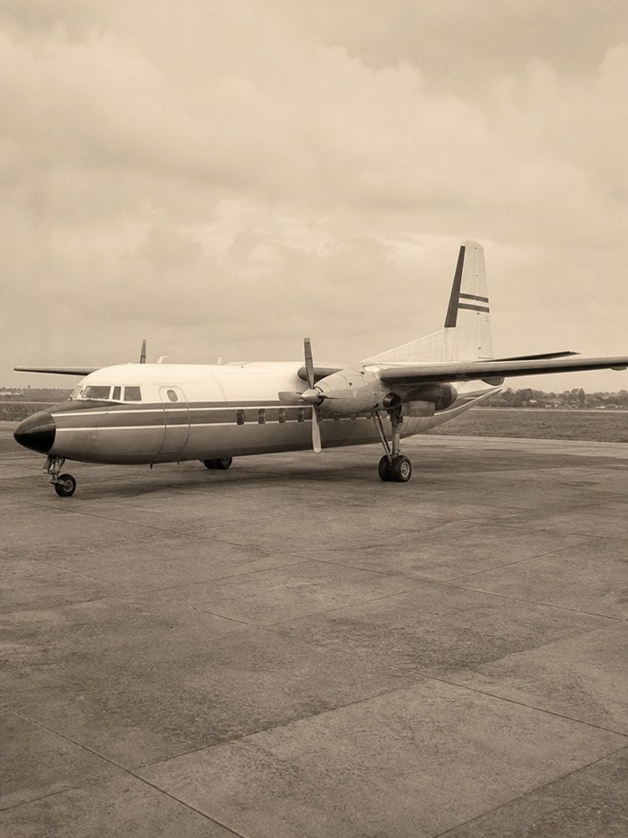
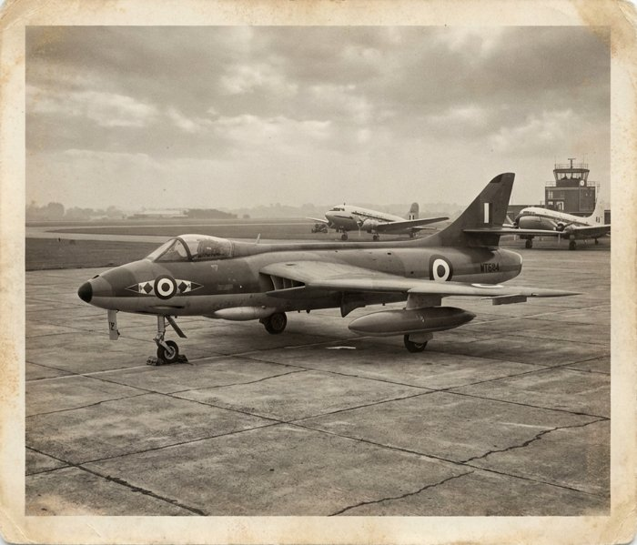
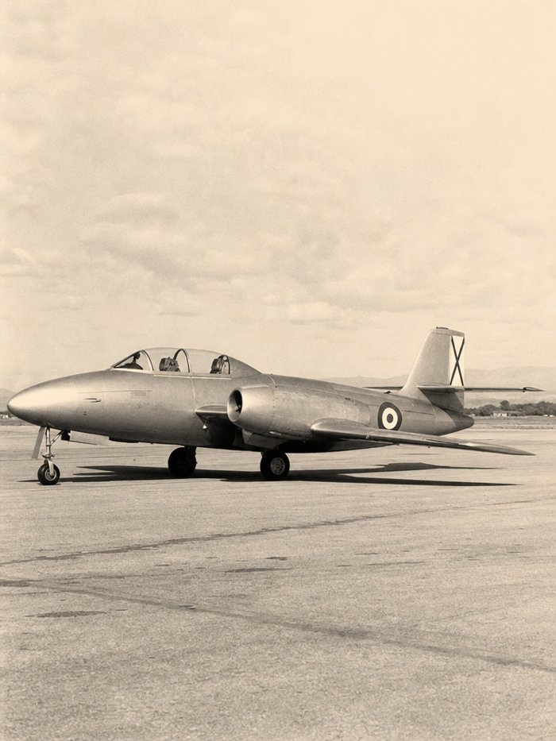
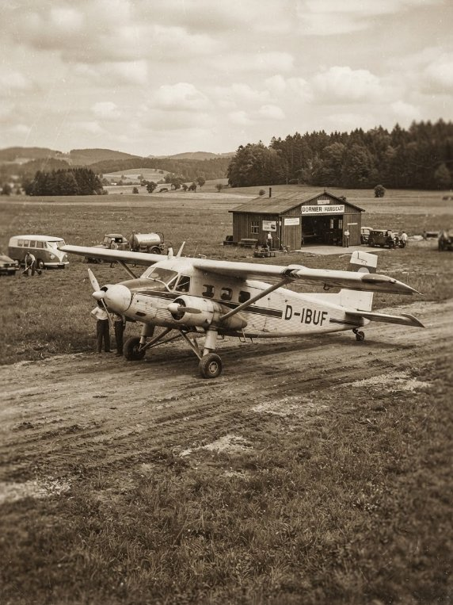
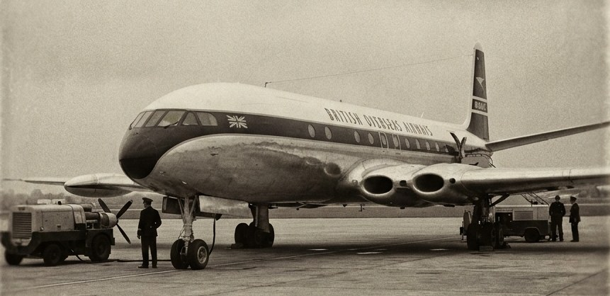
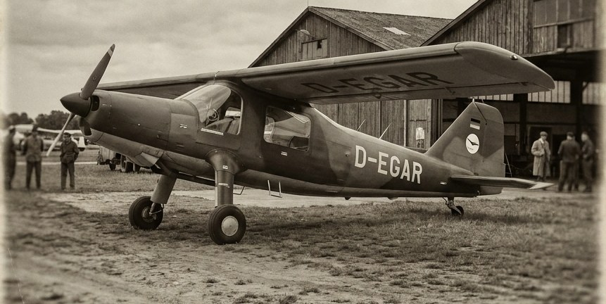
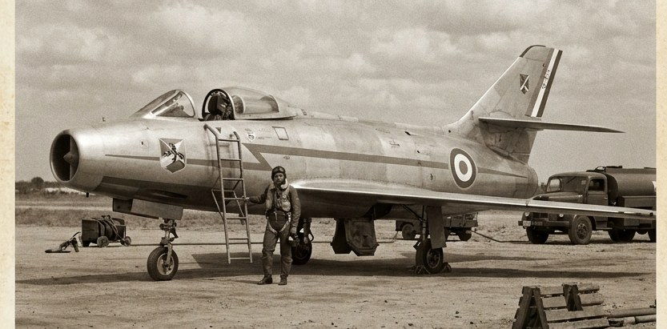

European Skies, 1950–1980
Between 1950 and 1980, Europe's aircraft industry was transformed twice over: first by the arrival of the jet engine, and then by the slow, difficult shift from rival national manufacturers toward pan-European collaboration. The period opens with the de Havilland Comet, which in 1952 became the world's first jet-powered airliner to enter commercial service, and closes with Concorde in scheduled transatlantic service and the first Airbus A300s reaching airlines — a symbolic handover from national "champions" to a shared European industrial model.
Aircraft were not built for their home markets alone. Cold War tension placed most European air forces inside NATO's integrated air defence system, so fighters designed in Britain, France, Sweden, or Italy were routinely flown by allied air forces elsewhere, and in several cases were built under license far from where they were designed — the American F-104 Starfighter assembled in West Germany, Italy, and the Netherlands being the clearest example. Civil airliners followed trade and former colonial and Commonwealth routes: the Comet linked London to Johannesburg, Singapore, and Tokyo for BOAC, while the French Caravelle was flown by over a hundred airlines from Scandinavia to West Africa to South America. Military aircraft, too, travelled far beyond their country of origin — France's Mirage III was exported across the Middle East, southern Africa, Latin America, and Oceania, making French industry, by the early 1970s, one of the world's largest arms exporters.
Three broad phases run through the period. The 1950s were dominated by the transition from propeller to jet power and by the reconstruction of industries flattened by the Second World War — West Germany, in particular, was barred from building military aircraft until 1955 and had to restart its industry almost from nothing. The 1960s saw the first serious attempts at standardisation and joint projects among NATO allies, alongside a wave of supersonic fighters from national manufacturers still working largely alone. The 1970s brought the clearest shift toward collaboration: the Anglo-French Concorde programme, the German-Dutch VFW-Fokker partnership, and above all the founding of the Airbus consortium, which by the end of the decade had begun to challenge American dominance of the civil airliner market.
The pages that follow are organised by decade, then by country, then by individual aircraft type, covering both civil and military designs from manufacturers based in Europe.





Browse by decade
-

1950–1960
The 1950s opened the jet age in European civil aviation and, at the same time, forced a near-total rebuild of several national aircraft industries after the devastation of the Second World War. Britain led the world…
-

1960–1970
The 1960s were the high-water mark of independent national fighter design in Europe, producing supersonic types such as Britain's Lightning, France's Mirage III, and Sweden's Draken, each built largely…
-

1970–1980
By the 1970s, European industrial collaboration had moved from treaty to hardware. Concorde entered scheduled supersonic passenger service in January 1976, jointly operated by Air France and British Airways,…